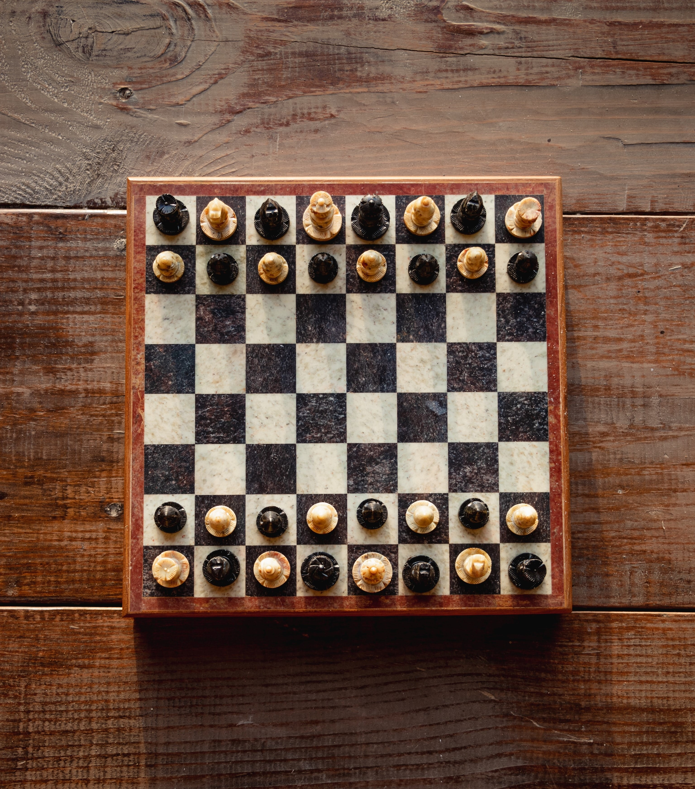

Chess is a two player board game played on a board with 64 squares.
Each player has 16 pieces each;
- 1 King
- 1 Queen
- 2 Rook
- 2 Knight
- 2 Bishop
- 8 Pawns
All the pieces on the board can be captured except the king. The goal of the game is to reach a stiuation whereby the King has no moves i.e. checkmate.
Chess has long been a popular board game, but in recent years, it has seen a significant increase in popularity. This is due to a number of factors, the rise of top players like Magnus Carlsen, the growth of chess in education etc. However I think import reall rose to peak engagement during the lockdown period. Everybody was getting into it; streamers, musicains, celeberities etc. There was even a famous event for newcommers into the chess world called pogchamps. The whole boom lead to rise in popularity of chess films and shows such the queens gambit and pawn sacrifice. There was overall a rapid increase in people that play/watch chess.
Professional Chess Variation
Professional chess players are tested by their prowess n different time modes and chess varaitions. Examples of these time modes are;
- Classical chess: widely considered as the most prestegious chess variation there is. It is usually the longest time controlled game and the most credible because the players have the longest time to think.
- Rpid chess: A chess game that uses a time format of 60- 15 minutes per player.
- Blitz chess: Also known as speed chess is a chess variation that uses a time format of 15-3 minutes per player. This is the most Interesting kind of chess to watch becuase it is not as long as classical chess which can be up to 7 hours and it is not as short as bullet chess.
- Bullet Chess: A chess variant in which time control is three minutes or less but is usually 1 minute. It leads to really fast and interesting games but I don't like watching it because it's hard to keep up.
Who is the best professional chess player?
Magnus Carlsen
Magnus Carlsen is handsdown the most talented chess player now and arguably of all time in my opinion. The reigning world chess champion has held the the most prestegious chess title (classical world champion) five times and turned down the opportunity to defend it simply because he didn't want to. He has been a beacon of admiration to his supporters and even adversaries. People who have played against him also speak highly of him. Right now, there's noone close to him
Gary Kasparov
Also arguably the greatest chess player of all time. He was active between the years 1985-2000 winning the classical world chess championship 6 times in that period. He is widely considered as the most domiant chess player of all time. He passed that torch to magnus carlsen despite their 13 year differnece in active profesional chess because is the closest to being as dominant as kasparov was.
Most entertaining?
I'd like to give that title to Bobby Fishcer. Click the link and find out why.
All the pictures belw are interactive.
Interesting chess TV shows/Movies
The Queen's gambit.

The Queen's Gambit is a television miniseries that was released on Netflix in 2020. It is based on the novel of the same name by Walter Tevis. The show follows the story of a young orphaned girl named Beth Harmon, who discovers a talent for chess and becomes a top-ranked player.
Pawn Sacrifice.

Pawn Sacrifice is a historical drama film released in 2015 that tells the story of Bobby Fischer, a legendary chess player who became the youngest grandmaster in history at the age of 15. The film follows Fischer's rise to fame and his tumultuous personal life as he prepares to take on the Soviet Union's top chess player, Boris Spassky, in the 1972 World Chess Championship. The film explores Fischer's obsession with chess and his struggles with mental illness, including his paranoia and erratic behavior. It also delves into the political tensions between the United States and the Soviet Union during the Cold War, as Fischer's match with Spassky becomes a proxy for the two superpowers' ideological and cultural differences.
Popular chess streamers and youtubers
Gothamchess.

GothamChess is an international master from new york city. He is the biggest chess streamer/youtuber in the world and he is responsble for some interesting chess content like guess the elo and chess for dummies.
The Botez Sisters.

The Botez sisters are Canadian-Ameican chess streamers born to romanian parents. They decided to really start making chess videos in covid and it really paid of.
Hikaru Nakamura.

Hikaru Nakamura is a chess grandmaster and the number 1 speed chess player in the world. He's really entertaining to watch because of just how better he is at chess than everyone else.
Anna Cramling.

Anna Cramling is a female chess streamer born to two grandmasters. Being born to two grandmasters, she as a really god understanding of the game and her parents feature in some of her videos.
Honorable mentions are Eric Rosen, AKA nemsko, daily dose of chess, etc.
Chess Videos I like


Where do I go to chess?
You can start your journey towards chess mastery on those two sites!